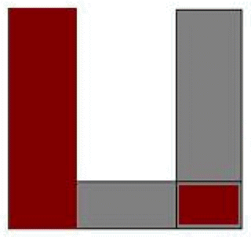
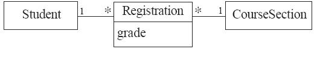

|  |
Key Links
Downloads
For Researchers
Social and External Media
Mailing Lists
Team
Development status
Related Sites
|
 |
UmpleOnline Manual News+Code Download Model-Oriented Programming - Umple.orgUmple is a modeling tool and programming language family to enable what we call Model-Oriented Programming. It adds abstractions such as Associations, Attributes and State Machines derived from UML to object-oriented programming languages such as Java, C++, PHP and Ruby. Umple can also be used to create UML class and state diagrams textually. Umple is an open source project, so details will evolve. However, it is ready to be used for real systems. In fact the Umple compiler itself is written in Umple. Any Java, C++ or PHP project could use Umple. We have found the resulting code to be more readable and have many fewer lines. This is because Umple means you can avoid having to code a lot of 'boilerplate' code that would be needed to implement associations and attributes, a system based on Umple should also be less bug-prone. Umple has also been found to help students learn UML faster in the classroom. Umple works online, as an Eclipse plugin, and as a stand-alone command-line Jar. For further information and downloads, see the left margin. ExampleThe following example shows how to declare attributes and associations in the first steps when modeling a system using Umple.
class Student {}
class CourseSection {}
class Registration
{
String grade;
* -- 1 Student;
* -- 1 CourseSection;
}
The class diagram to reflect the Umple code above is shown below.  Many other examples can be found in the Umple user manual, in UmpleOnline and on the Umple Examples Wiki page. Origin of the name UmpleThe word 'Umple' is a play on words, meaning 'Simple', 'UML Programming Language' and 'Ample'. Let us expand on these concepts a little: Simple: Umple is intended to be simple from the programmer's perspective because, a) there is less code to write, and b) there are fewer degrees of freedom than either Java or UML. Code that is eliminated includes boilerplate code for adding, deleting and modifying links of associations, as well as constructors and methods for accessing attributes. In all these cases, and many others, Umple provides sensible default implementations. UML Programming Language: Umple adds key features of UML to its target languages. Namely, the addition of association constructs and the simplification of attribute declarations. Ample: Despite the restrictions imposed by the deliberate simplicity of Umple, it is intended to have sufficient power to program the functional layer of most kinds of systems. |